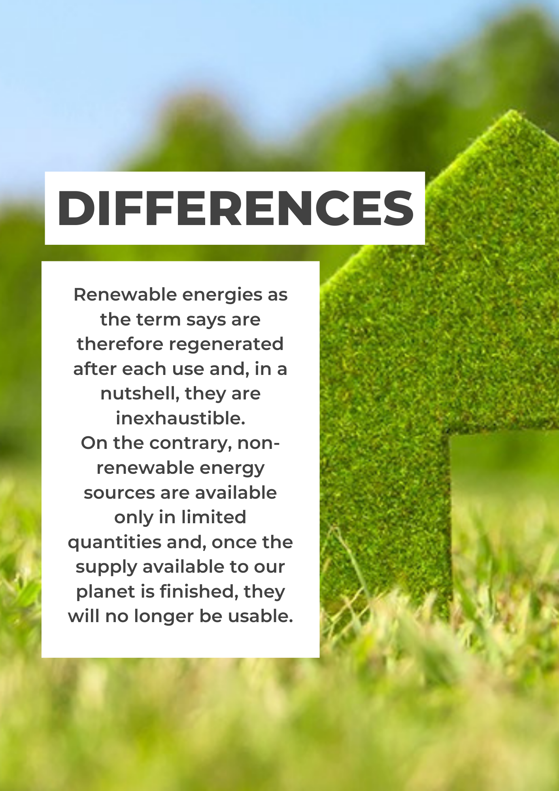

Renewable Energy
Non Renewable Energy
• They run out.
• Bad impact on the ecosystem.
• Polluting waste.
• fossil fuels.
• nuclear fuel.
Renewable Energy
• they don't run out.
• no bad impact on the ecosystem.
• no pollution.
• solar energ.
• eolic power.
• geothermal power.
• idroelectric power.
• biomass.
Differences
Renewable energies as the term says are therefore regenerated after each use and, in a nutshell, they are inexhaustible. On the contrary, non- renewable energy sources are available only in limited quantities and, once the supply available to our planet is finished, they will no longer be usable.
